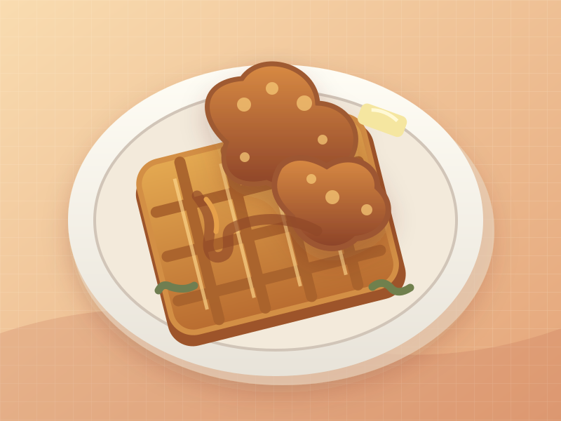

Breakfast · Recipe 01
Southern Chicken & Waffles
Sweet, savory, golden, and wonderfully crispy.
A plate worth getting out of bed for: crunchy buttermilk chicken over fluffy waffles with honey butter and warm maple syrup.
Prep time20 minutes
Cook time30 minutes
Servings4

From the recipe box
The Sunday-morning favorite.
Read through the steps once before you start, and have your ingredients ready to go.
What you'll need
- 1½ lb boneless chicken thighs or tenders
- 1 cup buttermilk (for the chicken)
- 1¼ cups all-purpose flour (for dredging)
- 1 tsp smoked paprika; 1 tsp garlic powder
- ½ tsp salt; ½ tsp black pepper
- Neutral frying oil, enough for 1 inch in a deep skillet
- 2 cups all-purpose flour (for waffles)
- 2 tbsp sugar; 1 tbsp baking powder
- ½ tsp salt (for waffles)
- 2 large eggs; 1¾ cups buttermilk (for waffles)
- ¼ cup melted butter, plus extra to serve
- Maple syrup and honey, for serving
Let's make it
- Marinate the chicken: Coat chicken in 1 cup buttermilk and refrigerate for at least 20 minutes while preparing the waffle batter.
- Mix the coating: Stir 1¼ cups flour with paprika, garlic powder, ½ tsp salt, and pepper. Lift chicken from the buttermilk, let excess drip off, and coat well in seasoned flour.
- Make waffle batter: Whisk 2 cups flour, sugar, baking powder, and ½ tsp salt. In another bowl whisk eggs, 1¾ cups buttermilk, and melted butter. Combine gently; a few lumps are fine.
- Cook the waffles: Heat and lightly grease a waffle iron. Cook batter in batches until golden and crisp, according to the waffle iron instructions.
- Fry the chicken: Heat oil to about 350°F in a deep heavy skillet. Fry chicken in batches, turning as needed, until deeply golden and the center reaches 165°F on a food thermometer. Allow to drain on a rack.
- Serve: Stack waffles, add hot crispy chicken, and finish with a pat of butter, a little honey, and warm maple syrup.
Save a seat for somebody you love.
← Back to the recipe box